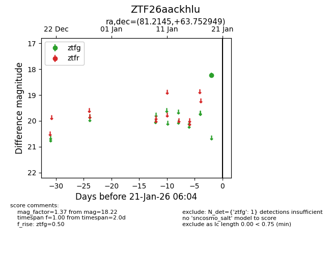
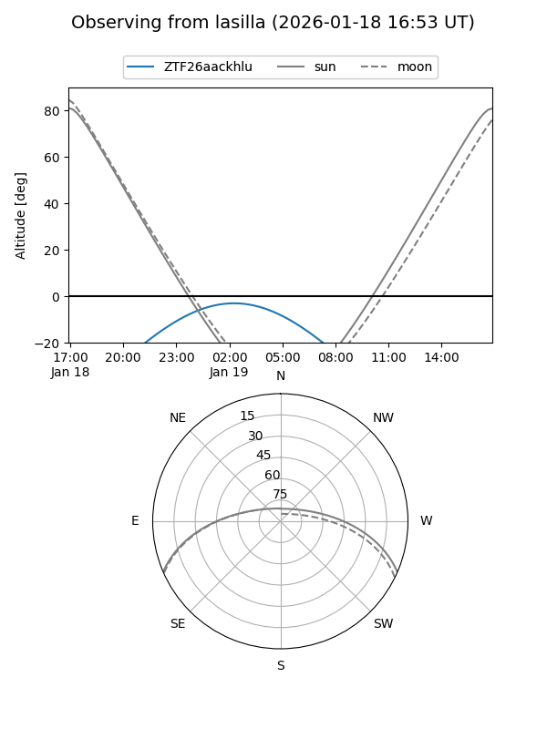
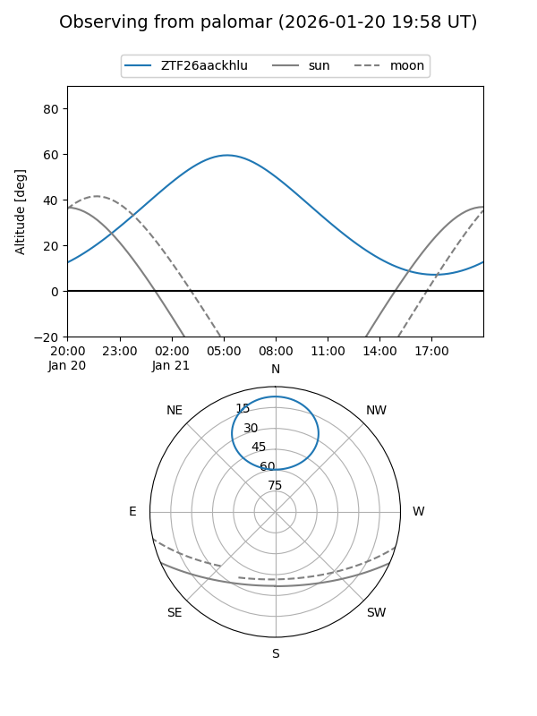

ZTF26aackhlu
Target ZTF26aackhlu at 2026-01-19 06:00
Aliases and brokers:
FINK: link
Lasair: link
ALeRCE: link
alt names
ZTF26aackhlu (ztf,fink_ztf)
Coordinates:
equatorial (ra, dec) = 81.2145,+63.75295
equatorial (HMS+DMS) = 05:24:51.48,+63:45:10.62
galactic (l, b) = (148.1556,+15.29520)
Flags:
Photometry:
last ztfg=18.22
1 ztfg detections
Lightcurve

Visibility


Additional plots